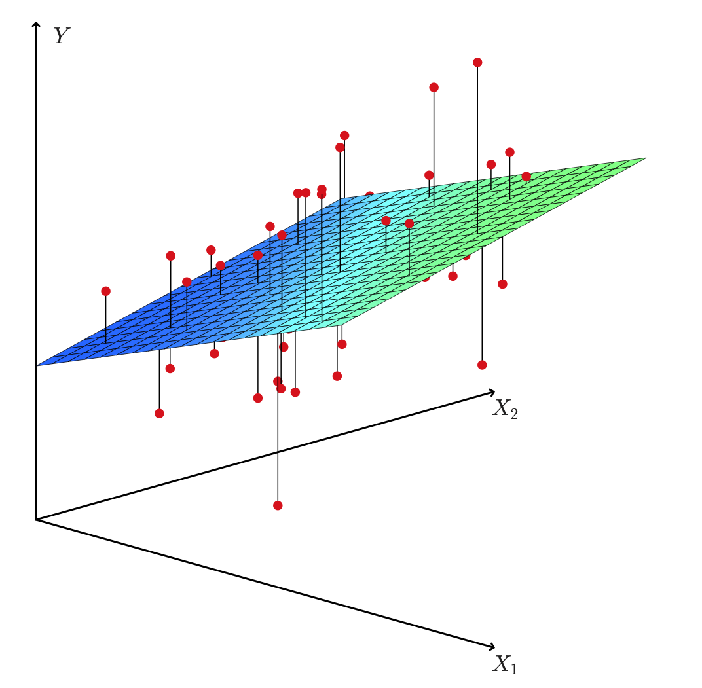
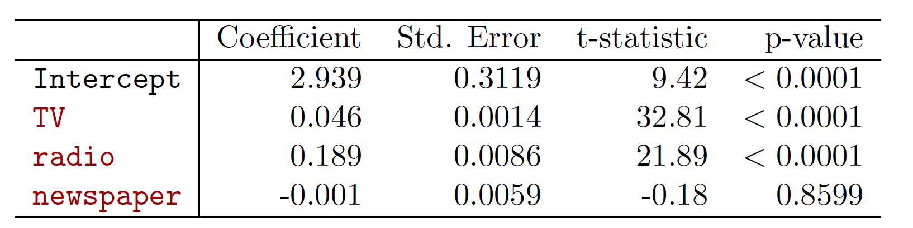
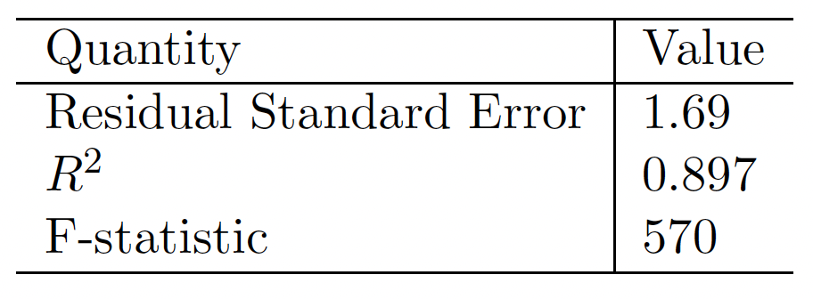
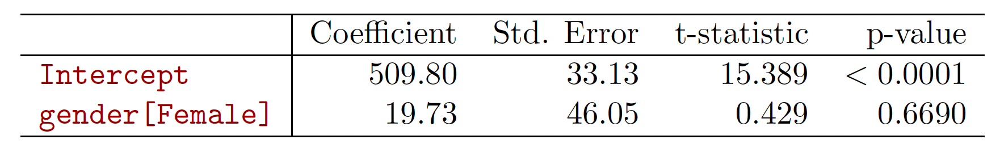
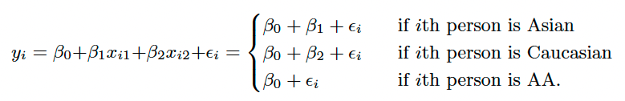

Chapter 3 of the textbook Gareth James, Daniela Witten, Trevor Hastie and Robert Tibshirani, An Introduction to Statistical Learning: with Applications in R.
Chapter 11 of the textbook Chantal D. Larose and Daniel T. Larose Data Science Using Python and R.
Part of this lecture notes are extracted from Prof. Sonja Petrovic ITMD/ITMS 514 lecture notes.
RRPredict a quantitative \(Y\) by more than one predictor variable \(X_i\) \[ Y \approx \beta_0+\beta_1 X_1+ \beta_2 X_2 + \ldots + \beta_pX_p.\]
Advertising Example:
\[sales \approx \beta_0+\beta_1\times TV + \beta_2\times radio + \beta_3 \times newspaper \]
We interpret \(\beta_j\) as the average effect on Y of a one unit increase in \(X_j\) , holding all other predictors fixed.
Let \(\hat{y}_i = \hat{\beta}_0+\hat{\beta}_1x_i+ \hat{\beta}_2x_2 + \ldots + \hat{\beta}_px_p\) be the prediction for \(Y\) based on the \(i\)th value of \(X\). \(e_i = y_i-\hat{y}_i\) represents the \(i\)th residual.
Residual Sum of Squares (RSS) \[\text{RSS} = \sum_{i=1}^n e_i^2 = \sum_{i=1}^n(y_i-\hat{y}_i)^2 = \sum_{i=1}^n(y_i-(\hat{\beta}_0+\hat{\beta}_1x_i+ \hat{\beta}_2x_2 + \ldots + \hat{\beta}_px_p))^2. \]
The values \(\hat{\beta}_0,\hat{\beta}_1,\ldots,\hat{\beta}_p\) that minimize RSS are the multiple least squares regression coefficient estimates.
Advertising Example


Question: is there a relationship between the Response and Predictor?
Multiple case: \(p\) predictors; we need to ask whether all of the regression coefficients are zero: \(\beta_1=\dots=\beta_p=0\)?
when there is no relationship between the response and predictors, one would expect the F-statistic to take on a value close to 1. [this can be proved via expected values]
else \(>1\).
Revisiting Advertising Example

AutoTraining and AutoTest mpg cylinders displacement horsepower weight
Min. : 9.00 Min. :3.000 Min. : 68.0 Min. : 46.0 Min. :1613
1st Qu.:17.00 1st Qu.:4.000 1st Qu.:105.0 1st Qu.: 75.0 1st Qu.:2225
Median :22.75 Median :4.000 Median :151.0 Median : 93.5 Median :2804
Mean :23.45 Mean :5.472 Mean :194.4 Mean :104.5 Mean :2978
3rd Qu.:29.00 3rd Qu.:8.000 3rd Qu.:275.8 3rd Qu.:126.0 3rd Qu.:3615
Max. :46.60 Max. :8.000 Max. :455.0 Max. :230.0 Max. :5140
acceleration year origin name
Min. : 8.00 Min. :70.00 Min. :1.000 amc matador : 5
1st Qu.:13.78 1st Qu.:73.00 1st Qu.:1.000 ford pinto : 5
Median :15.50 Median :76.00 Median :1.000 toyota corolla : 5
Mean :15.54 Mean :75.98 Mean :1.577 amc gremlin : 4
3rd Qu.:17.02 3rd Qu.:79.00 3rd Qu.:2.000 amc hornet : 4
Max. :24.80 Max. :82.00 Max. :3.000 chevrolet chevette: 4
(Other) :365 What are we looking at? (Read the help page on pairs.)
cor(). You will need to exclude the name variable, which is qualitative. mpg cylinders displacement horsepower weight
mpg 1.0000000 -0.7953103 -0.8178567 -0.7786909 -0.8391735
cylinders -0.7953103 1.0000000 0.9516815 0.8514926 0.9022953
displacement -0.8178567 0.9516815 1.0000000 0.9062581 0.9331957
horsepower -0.7786909 0.8514926 0.9062581 1.0000000 0.8678425
weight -0.8391735 0.9022953 0.9331957 0.8678425 1.0000000
acceleration 0.4148314 -0.5208030 -0.5679748 -0.6930539 -0.4290642
year 0.5777985 -0.3477279 -0.3768710 -0.4106514 -0.3066673
origin 0.5942479 -0.5784251 -0.6160101 -0.4650626 -0.5956841
acceleration year origin
mpg 0.4148314 0.5777985 0.5942479
cylinders -0.5208030 -0.3477279 -0.5784251
displacement -0.5679748 -0.3768710 -0.6160101
horsepower -0.6930539 -0.4106514 -0.4650626
weight -0.4290642 -0.3066673 -0.5956841
acceleration 1.0000000 0.2871972 0.2197497
year 0.2871972 1.0000000 0.1856525
origin 0.2197497 0.1856525 1.0000000lm() function to perform a multiple linear regression with mpg as the response and all other variables except name as the predictors. Why exclude name? There are too many levels in this categorical feature.
Call:
lm(formula = mpg ~ ., data = AutoTraining[, 1:8])
Residuals:
Min 1Q Median 3Q Max
-9.1191 -1.8962 -0.1845 1.8497 12.8286
Coefficients:
Estimate Std. Error t value Pr(>|t|)
(Intercept) -1.630e+01 5.022e+00 -3.246 0.0013 **
cylinders -6.717e-01 3.545e-01 -1.894 0.0591 .
displacement 1.796e-02 8.145e-03 2.205 0.0282 *
horsepower -1.803e-02 1.479e-02 -1.219 0.2237
weight -5.905e-03 7.065e-04 -8.357 2.33e-15 ***
acceleration -5.957e-03 1.063e-01 -0.056 0.9553
year 7.502e-01 5.555e-02 13.504 < 2e-16 ***
origin 1.646e+00 3.108e-01 5.296 2.27e-07 ***
---
Signif. codes: 0 '***' 0.001 '**' 0.01 '*' 0.05 '.' 0.1 ' ' 1
Residual standard error: 3.249 on 304 degrees of freedom
Multiple R-squared: 0.8342, Adjusted R-squared: 0.8304
F-statistic: 218.5 on 7 and 304 DF, p-value: < 2.2e-16Let’s refer to the output in this last code chunk:
Is there a relationship between the predictors and the response?
Which predictors appear to have a statistically significant relationship to the response?
weight, year, origin and displacement have statistically significant relationshipsWhat does the coefficient for the year variable suggest?
year suggests that later model year cars have better (higher) mpg.Use the `plot() function to produce diagnostic plots of the linear regression fit.
First you have to make a new data frame object which will contain the new point:
Min. 1st Qu. Median Mean 3rd Qu. Max.
8.453 20.671 25.235 24.533 28.757 36.199 To evaluate the mean absolute error (MAE) and mean squared error (MSE), we can install MLmetric package. \[ MAE = \frac{1}{n}\sum_{i=1}^n |y_i-\hat{y}_i|,
\qquad MSE = \frac{1}{n}\sum_{i=1}^n (y_i-\hat{y}_i)^2.\]
Split the iris data set into two parts IrisTraining and IrisTest
Construct a multiple linear regression for Sepal.Length without using Species
Predict Sepal.Length in IrisTest and calculate MAE and MSE
Some predictors are not quantitative but are qualitative, taking a discrete set of values. These are also called categorical predictors or factor variables.
Example: investigate differences in credit card balance between males and females, ignoring the other variables. We create a new dummy variable
\[ x_i = \begin{cases} 1 \mbox{, if $i$th person is female} \\ 0\mbox{, if $i$th person is not female} \end{cases} \]
Resulting model: \[ y_i=\beta_0+\beta_1x_i +\epsilon = \begin{cases} \beta_0+\beta_1+\epsilon_i \mbox{, if $i$th person is female} \\ \beta_0+\epsilon_i \mbox{, if $i$th person is not female} \end{cases} \]
Interpretation?
Results for gender model:

With more than two levels, we create additional dummy variables. For example, for the ethnicity variable we create two dummy variables. The first could be
\[ x_{i1} = \begin{cases} 1 \mbox{, if $i$th person is Asian} \\ 0\mbox{, if $i$th person is not Asian} \end{cases} \]
and the second could be
\[ x_{i2} = \begin{cases} 1 \mbox{, if $i$th person is Caucasian} \\ 0\mbox{, if $i$th person is not Caucasian} \end{cases} \]
Then both of these variables can be used in the regression equation, in order to obtain the model

There will always be one fewer dummy variable than the number of levels. The level with no dummy variable — African American in this example — is known as the baseline.
How to create dummy variable in R? We use a date set Salaries from package carData
rank discipline yrs.since.phd yrs.service sex
AsstProf : 67 A:181 Min. : 1.00 Min. : 0.00 Female: 39
AssocProf: 64 B:216 1st Qu.:12.00 1st Qu.: 7.00 Male :358
Prof :266 Median :21.00 Median :16.00
Mean :22.31 Mean :17.61
3rd Qu.:32.00 3rd Qu.:27.00
Max. :56.00 Max. :60.00
salary
Min. : 57800
1st Qu.: 91000
Median :107300
Mean :113706
3rd Qu.:134185
Max. :231545 If we use sex as an argument in lm, R will correctly treat sex as single dummy variable with two categories.
Call:
lm(formula = salary ~ sex, data = Salaries)
Residuals:
Min 1Q Median 3Q Max
-57290 -23502 -6828 19710 116455
Coefficients:
Estimate Std. Error t value Pr(>|t|)
(Intercept) 101002 4809 21.001 < 2e-16 ***
sexMale 14088 5065 2.782 0.00567 **
---
Signif. codes: 0 '***' 0.001 '**' 0.01 '*' 0.05 '.' 0.1 ' ' 1
Residual standard error: 30030 on 395 degrees of freedom
Multiple R-squared: 0.01921, Adjusted R-squared: 0.01673
F-statistic: 7.738 on 1 and 395 DF, p-value: 0.005667What about the categorical data with more than two levels?
As rank is a factor with three levels, R automatically create two dummy variables.
Call:
lm(formula = salary ~ rank, data = Salaries)
Residuals:
Min 1Q Median 3Q Max
-68972 -16376 -1580 11755 104773
Coefficients:
Estimate Std. Error t value Pr(>|t|)
(Intercept) 80776 2887 27.976 < 2e-16 ***
rankAssocProf 13100 4131 3.171 0.00164 **
rankProf 45996 3230 14.238 < 2e-16 ***
---
Signif. codes: 0 '***' 0.001 '**' 0.01 '*' 0.05 '.' 0.1 ' ' 1
Residual standard error: 23630 on 394 degrees of freedom
Multiple R-squared: 0.3943, Adjusted R-squared: 0.3912
F-statistic: 128.2 on 2 and 394 DF, p-value: < 2.2e-16Question: What is the baseline here?
Please construct a simple linear regression model to predict Sepal.Length by Species in IrisTraining.
Please construct a multiple linear regression model to predict Sepal.Length with all features in IrisTraining.
Predict Seplal.Length in IrisTest and calculate MAE and MSE